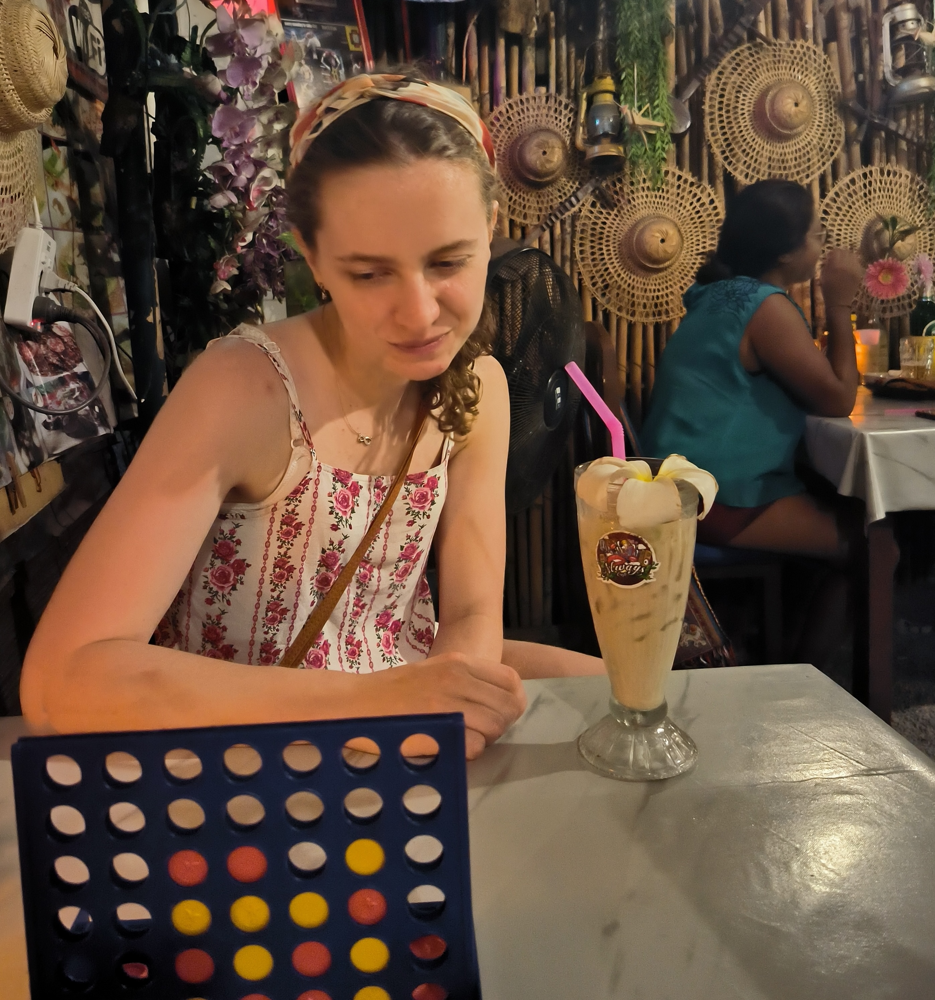

Edwina Aylward

Hello! I am a second year PhD student at University College London under the supervision of Vladimir Dokchitser. I am also one of the organisers of the London junior number theory seminar.
I am interested in algebraic number theory and arithmetic geometry. More specifically, my research concerns elliptic and hyperelliptic curves, the Birch and Swinnerton-Dyer conjecture, and parity conjectures.
Previously, I did my undergraduate studies at Trinity College Dublin, and the Part III masters course at Trinity College, Cambridge. A copy of my CV is here.
Preprints
Other writings
Talks
- Reduction types of genus 2 curves, (April 2025, WINGs 2025)
- Explicit regular models of hyperelliptic curves (March 2025, Models of Curves and Arithmetic Applications study group, UCL),
- Extended Weyl group and affine Dynkin diagrams (November 2024, Bruhat-Tits theory study group, KCL),
- Artin's primitive root conjecture (November 2024, 'Open problems in number theory' study group, UCL),
- Rank predictions: parity vs. L-value approaches (November 2024, Junior number theory seminar, University of Warwick),
- A survey of the Inverse Galois Problem (October 2024, London junior number theory seminar, KCL),
- Artin formalism and BSD (August 2024, YRANT VI, University of Oxford),
- Introduction to Etale cohomology (May 2024, Galois cohomology study group, KCL),
- Ray class fields (April 2024, Class field theory study group, UCL),
- Modularity theorem and Diophantine equations (October 2023, 10 minute presentations, UCL).
Contact
You can contact me at firstname.lastname.23@ucl.ac.uk.